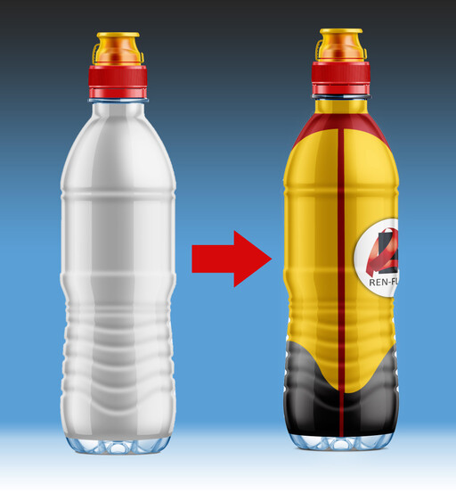
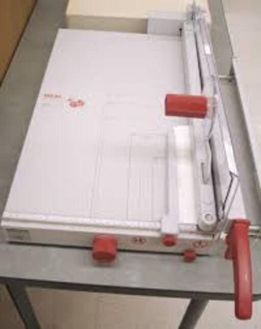
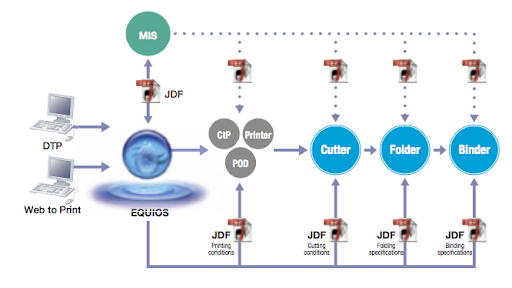
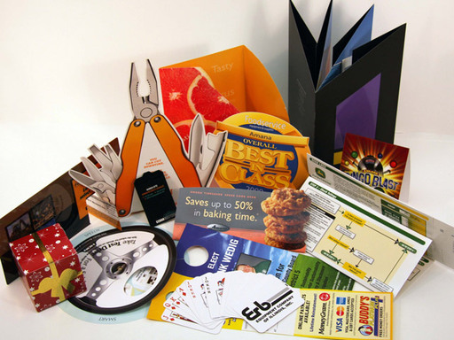
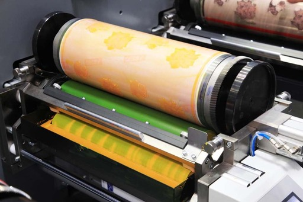
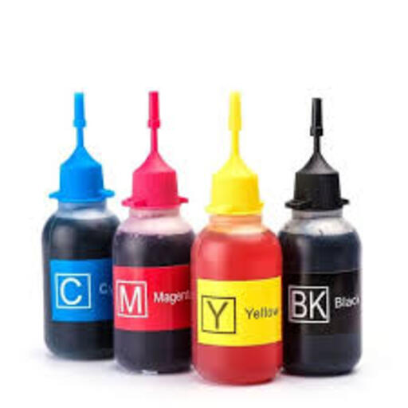
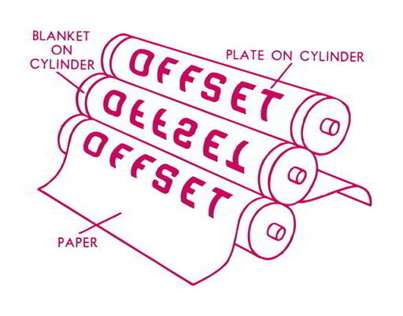
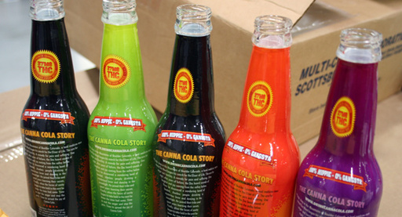
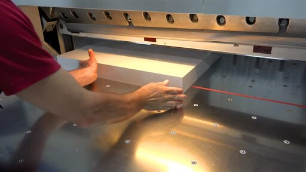
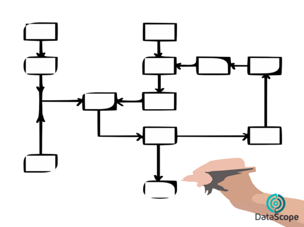

7 BTS ERPC 2ème année
7.1 Vocabulaire
| Français | English |
|---|---|
| ouvert d’esprit | open-minded |
| PAO | Desktop Publishing (DTP) |
| aimer faire qqch | to like doing stg |
| ajouter | to add |
| assister à une réunion | to attend a meeting |
| attentionné | caring |
| avoir peur de qqch | to be afraid of stg |
| bavard | chatty |
| bien aimer faire qqch | to enjoy doing stg |
| bien conçu | well-designed |
| bien s’adapter | to fit |
| blanchir | to bleach |
| brillant | glossy |
| carton | cardboard (U) |
| choisir | to choose |
| commander qqch | to order stg |
| d’apparence professionnelle | professional-looking |
| de la cire | wax (U) |
| de la colle | glue (U) |
| dorure à chaud | hot foil stamping |
| dos carré-collé | perfect-binding |
| décrire | to describe |
| délavé | washed out |
| dépenser (ou passer du temps) | to spend |
| empiler | to stack |
| encre | ink |
| enfance | childhood |
| enlever | to remove |
| essayer de faire qqch | to try to do stg |
| expédier qqch | to ship out stg |
| fabriquer qqch | to manufacture stg |
| faire du télétravail | to work from home |
| glaçage | glazing |
| hauteur | height |
| l’amidon | starch (U) |
| la couverture | the cover |
| la graisse (typographie) | the weight |
| la rogne | cut-offs |
| largeur | width |
| le dos d’un livre | the spine |
| longueur | length |
| lycée | high-school |
| mat | matte |
| mélanger (b…) | to blend |
| mélanger (m…) | to mix |
| obsolète | outdated |
| ondulé (carton) | corrugated |
| ondulé | wavy |
| paresseux | lazy |
| pelliculage | lamination |
| permettre à qn de faire qqch | to enable sb to do stg |
| permettre à quelqu’un de faire qqch | to allow sb to do stg |
| piqûre à cheval | saddle-stitching |
| profondeur | depth |
| précédent | previous |
| relier un livre | to bind a book |
| reliure spirales | coil binding |
| remarquer | to notice |
| rugueux | rough |
| réparer | to fix |
| résumer | to summarize |
| s’intéresser à qqch | to be interested in stg |
| se débarrasser de qqch | to get rid of stg |
| suivant | next |
| sécher | to dry |
| tard/en retard | late |
| traiter de | to deal with (dealt x 2) |
| traiter une commande | to run an order |
| travailleur | hard-working |
| télécharger | to download |
| téléverser | to upload |
| un appareil électronique | a device |
| un autocollant | a sticker |
| un blanchet | un blanket |
| un bobine | a reel |
| un bâtonnet (yeux) | a rod |
| un calage | a make-ready |
| un client | a customer |
| un devis | a quote |
| un dépliant | a folded leaflet |
| un entrepôt | a warehouse |
| un logiciel | a software |
| un manchon | a shrinkable sleeve |
| un massicot | a trimmer |
| un métier, commerce | a trade |
| un niveau | a level |
| un nuancier | a fan deck |
| un plateau | a tray |
| un pli roulé (UK) | a roll fold |
| un pli roulé (US) | a tri/letter fold |
| un pli-fenêtre | a gate-fold |
| un pli | a fold |
| un rabat | a flap |
| un revêtement | a coating |
| un rouleau | a roller |
| un stage | an internship |
| un trait | a stroke |
| un volume | a form |
| un écran (d…) | a display |
| un écran (m…) | a monitor |
| un équilibre | a balance |
| une caractéristique, une spécification | a feature |
| une cellule | a cell |
| une couche | a layer |
| une encoche | a notch |
| une entreprise | a company |
| une fente | a slit |
| une forme | a shape |
| une lame | a blade |
| une livraison | a delivery |
| une machine empileuse | a stacker |
| une nuance de couleur | a hue |
| une page | a sheet |
| une plaque | a plate |
| une poignée | a handle |
| une police (de caractères) | a font |
| une rainure | a scoring line |
| une récompense, un prix | a prize |
| une usine | a factory |
| une étape | a step |
| vernis sélectif | spot varnish |
| vif (couleur) | bright |
| écorce | bark (U) |
| épaisseur | thickness |
| être bon dans qqch | to be good at stg |
| un propriétaire | an owner |
| un réseau | a network |
| difficile | tough |
| une falaise | a cliff |
| une vente | a sale |
| acheter | to purchase |
| améliorer, mettre en valeur | to enhance |
| une légende (dessin) | a caption |
| jetable | disposable |
| une marque | a brand |
| un outil | a tool |
| découvrir | to discover |
| une formation | a training course |
| être responsable de | to be in charge of |
| un raccourci de clavier | a keyboard shortcut |
| maîtriser | to master |
| une compétence | a skill |
| réussir à, parvenir à faire qqch | to manage to do stg |
| une épreuve numérique contractuelle | a digital contract proof |
| un motif, un modèle | a pattern |
7.2 Traductions
| Français | English |
|---|---|
| J’ai appris à parler aux clients | I learned how to speak to customers |
| L’entreprise était située à Paris. | The company was located in Paris. |
| Nous imprimions des cartes de visites et des brochures | We printed business cards and booklets |
| Je devais venir à 8 heures du matin. | I had to come at 8. |
| J’ai assisté à des réunions très intéressantes. | I attended very interesting meetings. |
| J’ai fait un stage pendant 2 mois | I did an internship for 2 months |
| Je devais retoucher des photos | I had to edit photos |
| Mon entreprise imprimait des dépliants et des cartes de visite | My company printed booklets and business cards |
| J’ai appris de nouvelles compétences | I learned new skills |
| J’aimerais bien travailler à nouveau dans cette entreprise | I would like to work in this company again |
| Mes collègues m’ont beaucoup aidé | My colleagues helped me a lot |
| J’ai assisté à deux réunions avec des clients | I attended two meetings with customers |
| J’ai fait du télétravail | I worked from home |
7.3 Flashcards
| Images | Expressions |
|---|---|
| a cliff | |
| a network | |

|
a shortcut |
|  | a shrink sleeve label |
|  | a trimmer |
|  | a workflow |
|  | die cutting |
| embossing debossing | |
| embossing | |
|  | flexographic printing |
| foil stamping | |
| foil | |
|  | ink |
| misalignment in CMYK registration | |
|  | offset printing |
| perfect binding | |
| saddle stitching | |
| scoring | |
|  | shrinkwrapped bottles |
| spot uv coating | |
| to grow | |
| to upload | |
|  | trimming |
|  | workflow |